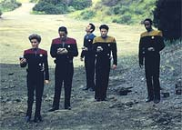
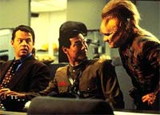
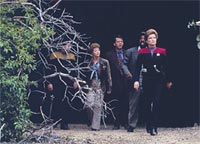
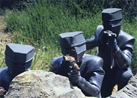
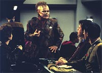
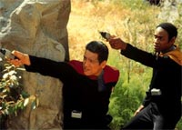

|
MANCHETE
DO EPISDIO
Abertura
da temporada traz senso de
famlia
para a tripulao da Voyager
Episdio
anterior | Prximo
episdio
Sinopse:
Data Estelar: 48975.1.
A USS Voyager altera o curso ao
detectar traos de metal oxidado (ferrugem) no espao. Janeway
surpreende-se, pois ferro no tem como enferrujar no cosmo devido
ausncia de oxignio. Chegando s novas coordenadas os
tripulantes encontram um objeto deriva no vcuo: um automvel
da Terra do sculo 20.
 Ao
transportar o veculo para o hangar, descobre-se em seu primitivo
equipamento de rdio um sinal de SOS emitido de um planeta nas
proximidades. Os transportes no funcionam na atmosfera, do mesmo
modo que uma nave auxiliar no conseguiria navegar. Logo, a nica
soluo encontrada pousar a prpria Voyager na superfcie.
Nesse mundo a capit encontra humanos que foram abduzidos da Terra
e levados ao quadrante Delta por uma raa avanada, em 1937.
 Mais
que isso, a nave descobre que ali se desenvolveu uma nova civilizao
humana, espalhada por trs cidades. Os humanos so hospitaleiros e
oferecem abrigo para os tripulantes da Voyager que optarem por
ficarem no quadrante Delta em vez de continuar tentando voltar para
casa.
No fim, toda a tripulao opta por ficar na Voyager, que abandona
o planeta e segue viagem rumo ao quadrante Alfa.
Comentrios:
"The 37's" foi originalmente concebido
para fechar a primeira temporada de Voyager. Por uma deciso
da rede UPN (que exibia a srie nos EUA), ele acabou ficando como
episdio de abertura da nova temporada. Ainda assim, ele um
marco para a srie. Ele foi o primeiro segmento (e um dos nicos)
a transmitir o senso de que a tripulao da Voyager realmente
uma grande famlia.
 Esse
sentimento, que nasceu de parto normal durante a evoluo de A
Nova Gerao e Deep Space Nine, teve de ser parido por
cesariana em Voyager, pela necessidade das duas tripulaes
(maquis e federada) de unir foras e voltar para casa. Justamente
por serem obrigatoriamente uma famlia, esse relacionamento entre
os personagens nunca ficou muito natural --at este episdio.
 A
histria tem vrios mritos, apesar de apelar um pouco para a
credulidade do telespectador em achar que coisas altamente improvveis
--como a Voyager encontrar humanos isolados no quadrante Delta em
sua viagem de volta para casa-- podem de fato acontecer.
Tambm forada a necessidade de pousar a nave. Mas os
produtores estavam a fim de mostrar o que a nova belezinha deles
podia fazer! Algum tem alguma reclamao quanto ao lindo
procedimento de aterrissagem da nave? Eu no tenho.
 De
resto, um episdio bonito e raro. Primeiro, porque resolveu
contar uma histria, em vez de ficar despejando tecnobaboseira por
45 minutos, como s vezes costuma ocorrer. No houve sequer um
elemento importante da trama resolvido com tecnologias malucas
tiradas da cartola.
Cenas como a que mostra Janeway e Chakotay rumo rea de carga
para ver quem vai querer deixar a nave e descobrem que a sala est
vazia, ou a subsequente, que mostra a capit na ponte dando ordens
para a decolagem da nave, funcionam maravilhosamente para
estabelecer esse clima familiar. Apesar de ligeiramente previsveis
e piegas, as cenas funcionam para tocar o telespectador. As atuaes,
a msica e os ngulos de cena operam sua magia com facilidade.
S senti falta de ver as tais cidades humanas no planeta. As sequncias
provavelmente no foram produzidas em razo de custos proibitivos,
mas parece que faltou alguma coisa entre o convite dos habitantes e
a volta nave, na cena seguinte.
 Por
fim, vale comentar o relacionamento de Amelia Earhart com a capit
Janeway --ambas pioneiras em seus prprios contextos. O papel de
Amelia para com Janeway semelhante ao que Abraham Lincoln teve
com Kirk no episdio clssico "The Savage Curtain".
Aposto que a aviadora foi um dos dolos da capit da Voyager!
O episdio totalmente Janeway e serve para demonstrar a
capacidade da capit de manter a tripulao unida e coesa. Nenhum
espao foi reservado para os outros personagens. Mas a capit
merece...
Citaes:
Paris - "Captain, I think
I should tell you I've never actually landed a starship before."
("Capito, eu acho que deveria avis-la de que eu nunca
pousei uma nave estelar antes.")
Trivia:
 Esse o primeiro episdio em que a
USS Voyager pousa em um planeta. Depois a veramos pousar novamente
em "Basics, parte I", no ltimo episdio da atual
temporada.
Esse o primeiro episdio em que a
USS Voyager pousa em um planeta. Depois a veramos pousar novamente
em "Basics, parte I", no ltimo episdio da atual
temporada.
A cena em que a tripulao de Voyager
encontra uma pick-up Ford de 1937 flutuando no espao pode ser
considerada uma reminiscncia de um quadro parodiando a srie clssica
de Jornada nas Estrelas, exibido no programa americano "Saturday
Night Live".
"The
37's" foi originalmente concebido para marcar uma nova direo
srie, aps a resoluo (ao menos parcial) dos conflitos
entre as tripulaes da Federao e os Maquis, unindo enfim os
grupos em uma s tripulao. Segundo Brannon Braga, um dos
escritores do episdio, "The 37's" seria o ltimo
episdio do 1 ano. "Ns estvamos interessados em termos a
tripulao mostrando um pouco de solidariedade, tentando fazer o
melhor nesta situao forada em que se encontravam. No existe
nada pior do que ligar sua TV e ver um programa em que todos se
odeiam (a no ser que seja uma comdia estilo "sitcom")",
diz Braga.
Ficha
tcnica:
Escrito por Jeri Taylor &
Brannon Braga
Dirigido por James L. Conway
Exibido em 28/08/1995
Produo: 020
Elenco:
Kate Mulgrew como
Kathryn Janeway
Robert Beltran como Chakotay
Roxann Biggs-Dawson como B'Elanna Torres
Robert Duncan McNeill como Tom Paris
Jennifer Lien como Kes
Ethan Phillips como Neelix
Robert Picardo como Doutor
Tim Russ como Tuvok
Garrett Wang como Harry Kim
Elenco convidado:
Sharon Lawrence como Amelia Earhart
David Graf como Noonan
James Saito como o soldado japons
Mel Winkler como Jack Hayes
John Rubenstein como John Evansville
Episdio
anterior | Prximo
episdio
|